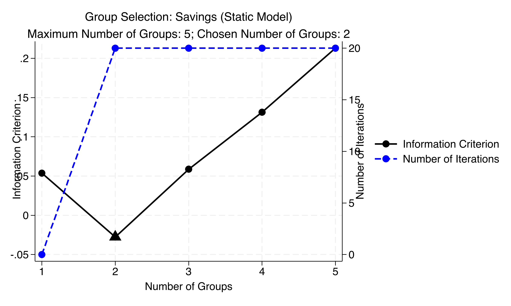
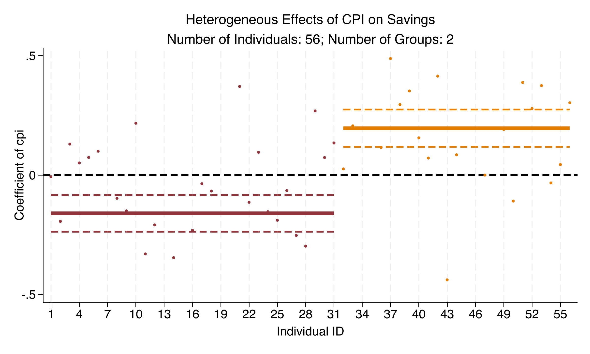
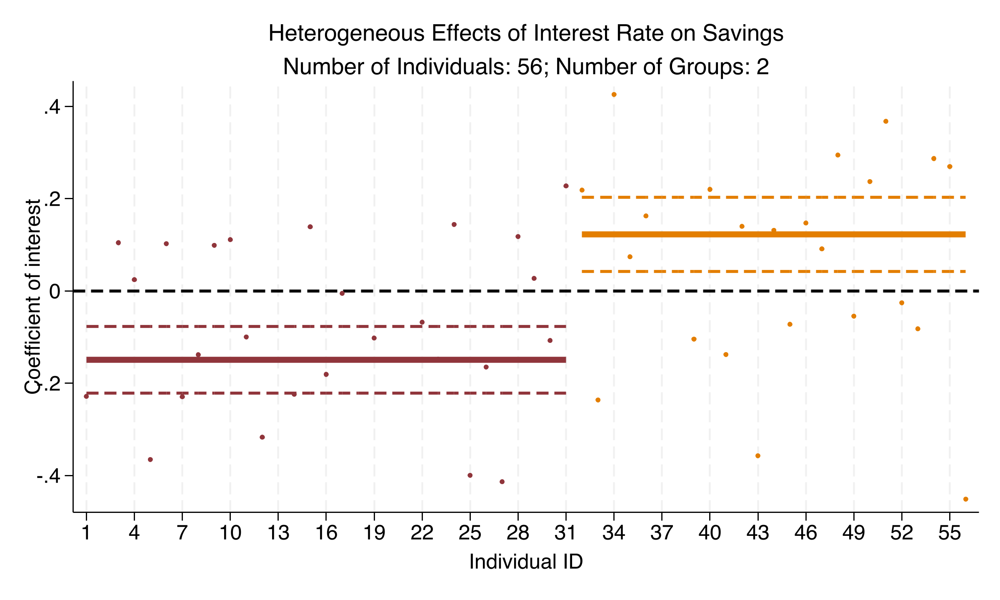
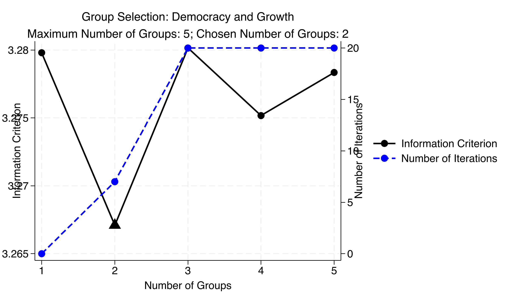
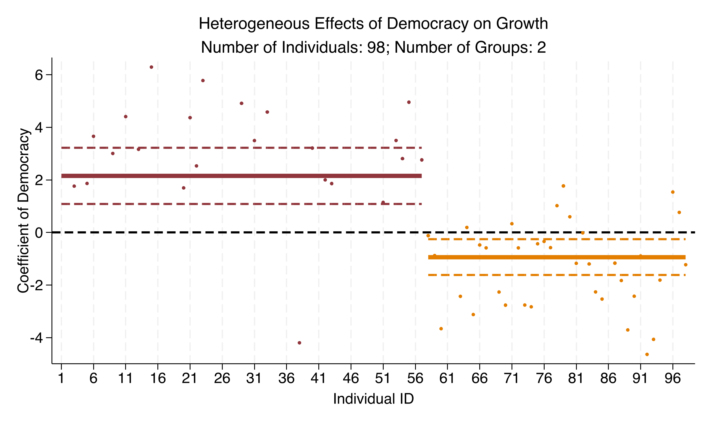

The product penalty \(\prod_k\|\boldsymbol{\beta}_i-\boldsymbol{\alpha}_k\|\) vanishes when \(\boldsymbol{\beta}_i\) is near any center \(\boldsymbol{\alpha}_k\) — that’s what sorts unit \(i\) into a group.
The recipe is three steps: sort, re-estimate unpenalized, then pick K by an information criterion
Sort — for each candidate \(K\), iterate group centers and reassignments to convergence
Postlasso — discard the penalized fit; re-run plain OLS within each group for valid SEs
Select \(K\) — choose the \(K\) minimizing an information criterion (fit vs. complexity referee)
With zero controls split out, the pooled CPI effect on savings is a flat, insignificant +0.030
Variable
Pooled / FE coef.
Significant?
lagsavings
0.605
yes
gdp
0.188
yes
cpi
+0.030
no
interest
+0.006
no
The textbook read: “inflation and interest rates don’t affect savings.” Hold that thought.
Six lines of Stata fit the whole C-LASSO workflow — estimate, select K, assign groups
classifylasso savings cpi interest gdp, grouplist(1/5) tolerance(1e-4)classoselect, postselection // unpenalized re-fit for valid inferencepredict gid_static, gid // assign each country to its groupclassocoef cpi // plot group-specific coefficientsclassogroup // plot the IC across candidate K
The information criterion bottoms out cleanly at K = 2 — a clear U-shape

IC (left axis) and iterations to convergence (right axis) by number of groups, static savings model — minimized at K=2.
Inflation erodes savings for 34 countries but boosts it for 22 — the pooled zero was averaging both
Group
cpi
interest
gdp
Group 1 (34 countries)
−0.181
−0.197
+0.335
Group 2 (22 countries)
+0.478
+0.263
+0.112
All four highlighted CPI/interest coefficients are significant at \(p < 0.001\). The pooled +0.030 was \(-0.181\) and \(+0.478\) canceling.
The sign reversal is not a static artifact: it survives adding lagged savings — and confidence bands don’t overlap

CPI coefficient and 95% bands by group, dynamic savings model: Group 1 negative, Group 2 positive, non-overlapping bands.
The interest-rate effect splits the same way — substitution wins in one group, income in the other

Interest-rate coefficient and 95% bands by group, dynamic savings model: the same negative-vs-positive split as CPI.
The Resolution
Act III
Now democracy: the pooled two-way FE effect on log GDP is +1.055, clustered on 98 countries
Term
Coefficient
Clustered SE
p
Democracy
+1.055
0.370
0.005
lagged GDP
+0.970
0.006
<0.001
Standard errors clustered on 98 countries. This replicates Acemoglu et al. (2019): on average, democracy promotes growth.
C-LASSO again picks K = 2 for democracy — though the IC race is close (range 3.267–3.280)

IC and iteration count, democracy model — minimized at K=2, but IC values span just 0.013 across all K.
For 57 countries democracy helps; for 41 it hurts — a genuine sign reversal
+2.151
Democracy effect on log GDP, Group 1 of 57 countries (p < 0.001); Group 2’s 41 countries get −0.936 (p = 0.007)
The polarization is unmistakable — neither group’s band crosses zero, and +1.055 describes neither

Democracy coefficient by country and group: Group 1 (57) clusters near +2.2, Group 2 (41) near −1.0; pooled +1.05 fits neither.
Side by side: the pooled coefficient sits between two effects it never represents
Pooled FE
Group 1
Group 2
Democracy coef.
+1.055
+2.151
−0.936
Clustered SE
0.370
0.546
0.348
p-value
0.005
<0.001
0.007
Countries
98
57
41
This is Simpson’s paradox in a panel: the aggregate trend reverses inside the subgroups.
Does C-LASSO make this causal? No — it disciplines selection, not identification
Objection. You sorted countries by their coefficients, so of course the groups have different coefficients — and a sign flip sounds like overfitting.
Response. The sorting is penalized and validated by an out-of-sample-style IC that consistently picks K = 2 across three specifications; the postlasso re-fit gives honest, country-clustered SEs with non-overlapping bands. C-LASSO chooses controls/groups flexibly — it does not relax the identifying assumptions of Acemoglu et al. (2019). These remain conditional associations.
When slopes might differ, let the data sort the groups — before you trust the average.